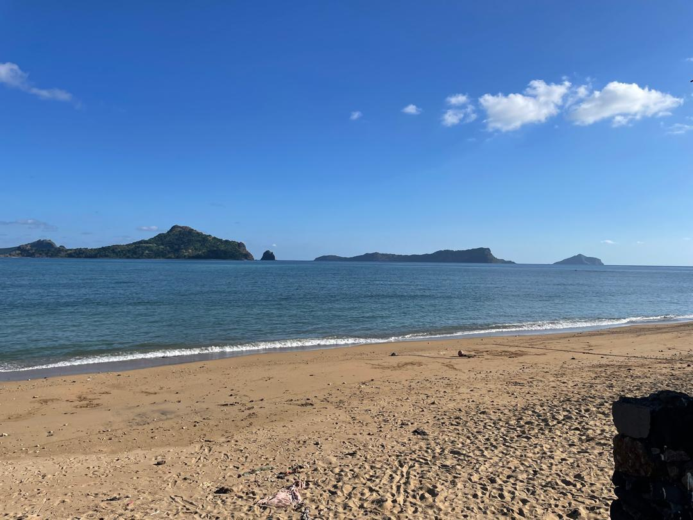

MoheliGoTRAVERSÉES MARITIMES
SI TU AS DÉJÀ UN BILLET
TA DATE CHANGE,PAS TON BILLET.
Changer la date est gratuit, sur la même liaison.
Ton billet et son code QR restent valables.
ÉCRIS-NOUS SUR WHATSAPP
TRAVERSÉES MARITIMES DES COMORESmoheligo.com